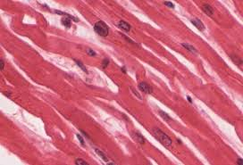
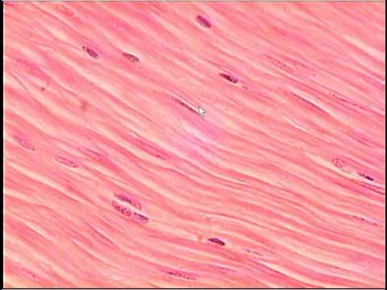
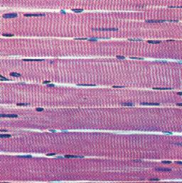
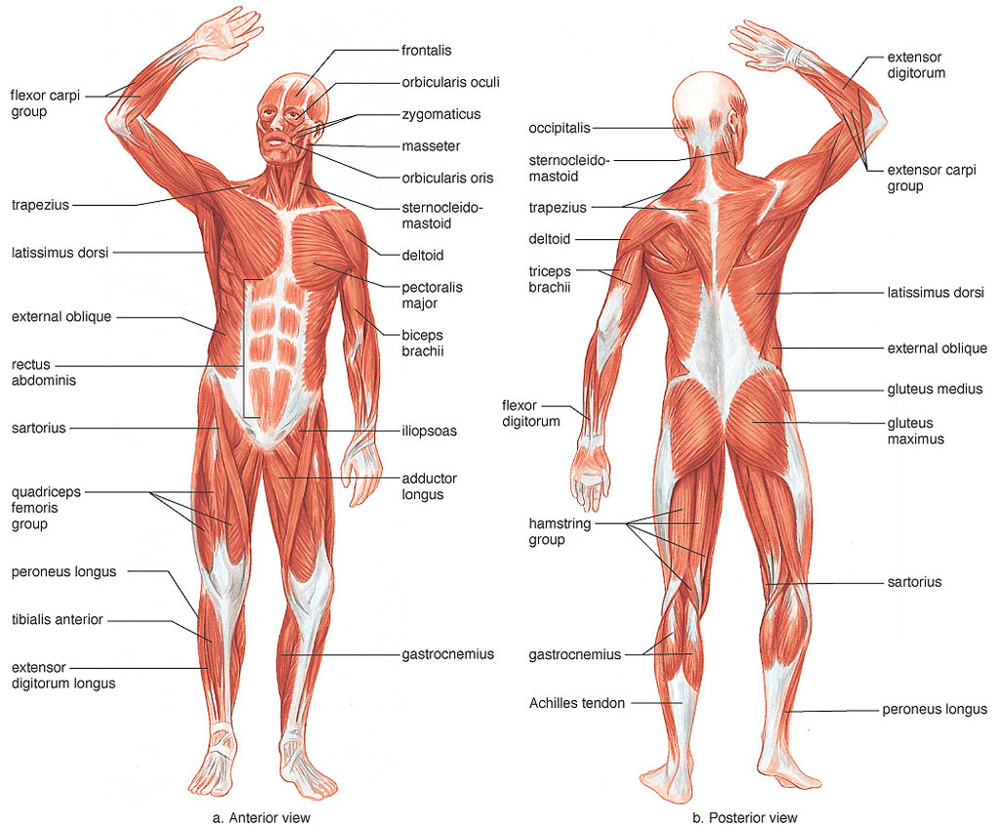

top
The muscular system has many functions depending on where the muscles are located in the body. The main purpose of the muscular system is movement. Muscles contract and expand when they get signals from the nerves. Other functions of this system include maintaining body posture, movement of substances inside our body, and creating heat. The job of certain muscles is to hold up the body. Just to stand still, the muscles in our body must contract to hold the body's position. There are also specific muscles that aid with functions within our body. These muscles help fluids like blood move through the body. As muscles contract and expand to create movements inside the body, waste heat is being produced. When muscles are doing more work to create faster movements, there becomes a large amount of waste heat in your body. Since this extra heat is unnecessary, it gets removed from the body to cool the body down. That is why long and/or heavy workouts lead to sweating; the sweat is the excess heat being removed from the body. Muscles supply about 80% of our body’s heat.
The system is comprised of muscle tissues connected to bones through a tissue called tendon. Muscles are also found in organs such as the stomach and intestine. Muscles are the tissues that allow our bodies to move. They are made up of 75% water, 20% protein and 5% other materials. Muscles are connected to many organs to help the organ perform its function properly. Muscles are either voluntary or involuntary. Voluntary muscles are movements of the body which you are consciously doing, like raising your hand or kicking your leg. Involuntary muscles help the movements of the body which we move unconsciously, such as food digesting in the esophagus and the beating of the heart. One cannot control the movements of involuntary muscles.
|  |  |  |
There are three categories of muscles depending on what organ they support and where they are found in the body: cardiac muscle (found in the heart), smooth muscle (found in organs such as the stomach and intestines) and skeletal muscle (connected to bones through tendons). Smooth muscles and cardiac muscles are involuntary, while skeletal muscles are voluntary. Cardiac muscle tissues are only found in the heart. The heart is the strongest muscle in the body. Its job is to pump blood around the body and beat consistently. Myocardial cells (heart cells) are joined together and contract simultaneously to their fullest, causing the heart to beat. Smooth muscle tissues are found in walls of blood vessels, the gallbladder, small arteries, the urinary bladder, etcetera and it helps them move substances through the body. Smooth muscles are hollow and smooth in appearance under a microscope. Most of the muscles in our body are skeletal muscles. Skeletal muscles make up half the bodies weight. They contract and shorten to create movement. Biceps are skeletal muscles in our arm which are connected to our shoulder and radial bone by tendons. Biceps help us bend our elbow.
Like any other system in the body, your muscular system can get affected by various diseases. Muscular dystrophy is a group of diseases that are caused by mutating (changing) genes that affect the creation of the proteins that produce healthy muscles. They are hereditary diseases that can be diagnosed at childhood. About half of people with muscular dystrophy have Duchenne muscular dystrophy. Symptoms of this disease are usually visible between the ages of 2 and 3, and may include walking on toes, muscle pain and stiffness, and having trouble running, jumping or getting up from a lying or sitting position. Myotonic muscular dystrophy is another common disease also known as Steinert’s disease. This disease makes it hard to contract or relax muscles. The symptoms include weak muscles in the hands, legs and necks at about the ages of 20 to 30. Another disorder that can affect the muscular system is Cerebral palsy. It is caused by a brain malformation or injury during pregnancy or after birth. It affects the posture, balance and basic functions of the skeletal muscles. This disorder affects muscle coordination and movement, and makes it hard to do physical tasks. Symptoms of this disease include seizures, difficulty moving muscles near the throat and mouth, moving mainly with one side of the body (dragging the other foot, using mainly one hand) and stiff muscles.
The muscular system needs regular maintenance to remain healthy and strong. Without proper maintenance, there could be many negative effects on the body. To make sure your muscles are strong and healthy, you need to be getting about 60 minutes of physical activity in a day, eating nutrient- filled foods, and giving your muscles rest. There are specific exercises to workout different muscles in your body. Before workouts, it is important to do stretches to make sure you do not damage your muscle due to a lot of strain at once. It is important to also rest your muscles by getting about seven to ten hours of sleep in a day. Sleep can help your muscles relax, and can help small tears repair. Also, certain nutrients such as calcium, protein, vitamin B12 and magnesium specifically help muscle contractions, muscle growth and increase the coordination between the brain and the muscles.
The other 10 organ systems of the body are the skeletal, urinary, nervous, digestive, endocrine, reproductive, respiratory, cardiovascular, integumentary and lymphatic systems.
This webpage on The Muscular System was sourced from the following websites:
Image Credits:
Return to the top of the page.